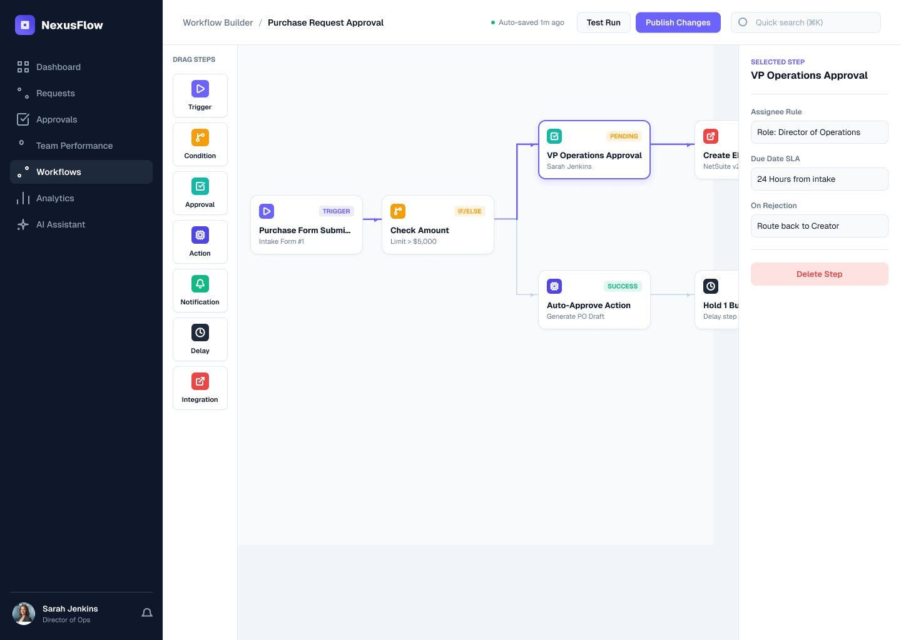

The UX Audit Checklist: 25 Things I Check Before Redesigning a Product
Before redesigning anything, I run this checklist. It shows what’s actually broken, so you fix the right things first.

A redesign without an audit is guesswork. Before I change a single pixel, I review the current product against a simple checklist. It turns “something feels off” into a clear list of problems, ranked by impact. Here it is, so you can run it yourself.
First impressions
- Is it clear what the product does within five seconds?
- Does the main headline speak to the user’s problem?
- Is there one obvious next step?
- Does the design look trustworthy and current?
Ask someone who has never seen the product to look at the homepage or first screen for five seconds, then describe what it does. Their answer tells you more about clarity than any internal review.
Navigation and structure
- Can users find key pages in two clicks or fewer?
- Do menu labels use the customer’s words, not internal jargon?
- Do users always know where they are?
- Is search available where content is deep?

Forms and key flows
- Are forms as short as they can be?
- Do errors explain how to fix the problem?
- Can users complete sign-up or checkout without creating friction?
- Are progress and next steps visible in multi-step flows?
Walk through every critical flow yourself on a phone: sign up, buy, book, invite a teammate. Note every moment you hesitate, re-read something or tap the wrong thing. Those moments are your users’ moments too.
Mobile
- Are tap targets large enough and well spaced?
- Is the main action reachable with a thumb?
- Does text stay readable without zooming?
- Do menus and filters work well on small screens?
Content and clarity
- Is copy scannable, with clear headings?
- Are benefits stated before features?
- Are empty, loading and error states designed?
Accessibility
- Does text have enough colour contrast?
- Can everything be used with a keyboard?
- Do images have meaningful alt text?
Use the WCAG accessibility guidelines as your reference.
Accessibility fixes help everyone, not just users with disabilities. Better contrast helps people outdoors, clear focus states help keyboard users and descriptive labels help everyone understand forms faster.
Speed and trust
- Do key pages load quickly on mobile? Check PageSpeed Insights.
- Is social proof placed near decisions?
- Are prices, policies and contact details easy to find?
Use heuristics as a second lens
Once the checklist is done, I review the product against Nielsen Norman Group’s 10 usability heuristics. It catches issues a checklist can miss, like inconsistent patterns or missing undo options.
Finally, combine the findings into a short report: the issue, where it happens, why it matters and a recommended fix, sorted by priority. A clear, ranked list is what turns an audit into results.
How to turn findings into results
An audit only helps if the fixes ship. Group the issues into three buckets: quick wins you can fix this week, medium changes for the next sprint and bigger structural problems that need design work.
- Quick wins: copy, labels, contrast, button placement
- Medium: form changes, navigation tweaks, empty states
- Structural: new flows, page redesigns, information architecture
Measure the key numbers before and after each batch, such as sign-ups, add-to-cart rate or task completion, so you can see the impact clearly.
Want me to audit your product?
A UX audit is often the best first step before a store redesign or a dashboard refresh. Send me your screens and I’ll show you where users drop off and what to fix first.
Send me your screens and I’ll show you where users drop off and what to fix first.
Quick answers
What is a UX audit?
A UX audit is a structured review of a website or app that finds usability problems and ranks them by impact, so you know what to fix first.
How long does a UX audit take?
A focused audit of key flows usually takes a few days. Larger products with many flows take longer.